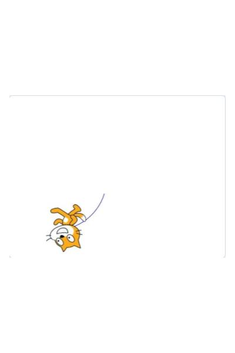
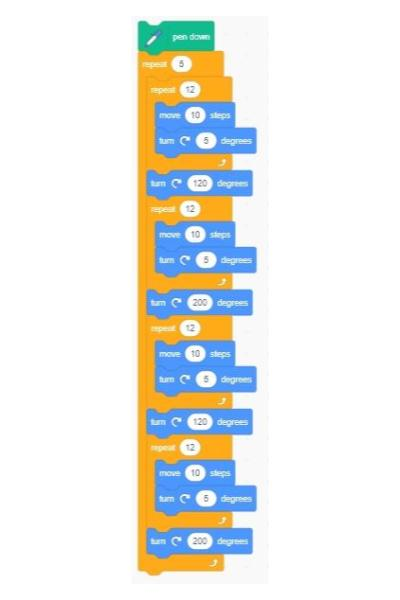

How does code work
Firstly it is important to note that different programming languages operate differently and as such have different rules about what can and cannot be done with the language. In this example we will specifically be talking about object orientated programming languages and their uses. Computer code follows a step-by-step process of reading each line of its instruction written by the programmer and executing each instruction one at a time. This step-by-step process is done through a compiler that actually reads the written code and turns it into even more basic code that the machine can better understand.
In the image above the code is written in Python. We can see that each line of code is numbered and contains unique code that completes a set of instructions. We can refer to a specific instruction by its line number, on line 1 some code is written to create a variable called isAwesome that holds in it a boolean value which can be either true or false, on this line we have set it to true. On line 3 there is an if statement which is a component of python and many other languages that allows for a true or false comparison that when evaluated at true runs the code inside its scope (the indented line(s) under it) and if false it skips over the braces to the next thing written. Inside the if statement is written (isAwesome == true) this is a comparison that checks the value of the variable called isAwesome and checks to see if it's the same as true. If the comparison is true then we print out "Wow! this is awesome" and if it's false we print out "This doesn't seem very awesome."
Here is the same coding example except designed in scratch using block based coding.
Draw a Flower
The pen is a fantastic tool to use in Scratch as it emulates one of the most basic programs in computer science, the turtle. In this scratch activity we will be using the pen tool to show off how simple loops can lead to very pretty and pleasing designs. By the end of this activity you will have made something that looks like the gif on the homepage of this website.
- Open up scratch.mit.edu from the "Online Resources" box to the right
- Select the "Start Creating" button on the new page
- In the bottom left-hand corner of the page there is a blue button, Click it
- Now select the pen extension from the menu
- Doing this gives us access to a new set of code blocks that allows us to use the pen tool
- Now we can start creating our flower
- 
- 
Use the arrows on the slides to the left to progress through the activity and change this text!
first we want to get a feel for how the tools work, try experimenting with some of them to create something like the following.